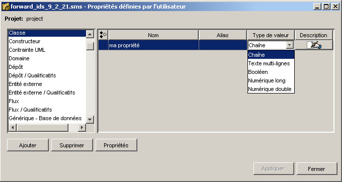

Créer des propriétés de l'utilisateur
Les propriétés de l'utilisateur sont des attributs avancés pour des concepts du projet.
Elles sont définies par l’utilisateur et servent à personnaliser la description de ces concepts.
Ainsi, chaque concept peut avoir plusieurs propriétés de l'utilisateur.
Si vous voulez créer vos propres propriétés pour le modèle, vous devez choisir, dans le
menu principal, Affichage > Propriétés de l'utilisateurs.

Dans la fenêtre de propriétés de l’utilisateur, vous devez choisir :
- Concept : choisissez le concept du projet pour lequel vous voulez définir une propriété.
- Nom : identifiez la propriété en lui donnant un nom.
- Alias : identificateur complémentaire pour la propriété (facultatif).
- Type de valeur : spécifiez le type de valeur que l'utilisateur entrera à votre
propriété. Pour une liste des types de valeurs voir la table à la page suivante.
- Description : entrez une description textuelle pour le paquetage (facultatif).
NB: En changeant le Type de
valeur, les valeurs déjà entrées
seront perdues.
Voici les types de valeurs possibles :
- Chaîne : chaîne de caractères de tous genres, avec une longueur illimitée sur
une ligne seulement.
- Texte multi-lignes : comme la chaîne mais on permet l'utilisation du retour de
chariot.
- Booléen : vrai ou faux.
- Numérique et long : nombres entiers.
- Numérique et double : peut comporter des fractions.